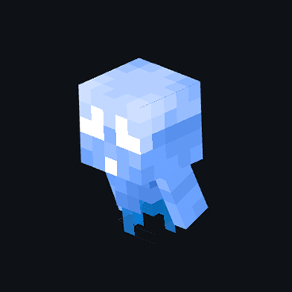

Призрак

-
Место спавна: Тёмный лес
-
Редкость: нормальная
Дружелюбный моб, который встречается в биоме тёмного леса. Он ничего не умеет делать, а лишь блуждает лесом. Нажав по нему ПКМ, используя
Банку, то можно его поймать в неё. Таким образом игрок получит
Призрака в банке, который является ингредиентом для
Особого зелья. Призрак не выбрасывает предметы после смерти, а лишь немного опыта.